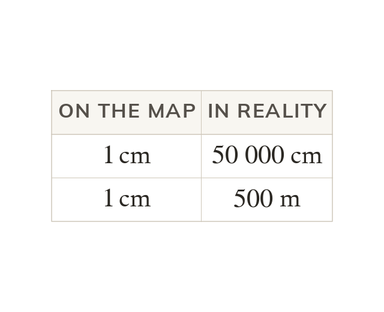

What a scale means
A map scale is the ratio of map distance to real distance. Both parts must be in the same unit. 1:n means map unit is n real units.
A map scale is a ratio of distance on the map to the matching real distance. Both parts must be in the same unit before the scale is used. A scale written 1:n means one unit on the map represents n of the same units in reality.